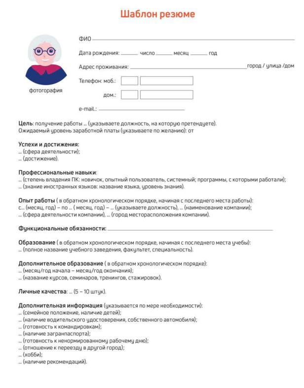

ГЛАВА 9 «Поиск работы через интернет»
Чтобы найти работу через интернет, нужно:
• Определиться, какая работа вам нужна.
• Составить свое резюме. Это можно сделать в программе Word.
• Найти интернет -ресурсы, где вы могли бы разместить свое резюме
Тематические сайты по поиску работы
В интернете есть сайты и порталы, специализирующие на подборевакансий для соискателей и резюме сотрудников для работодателей, — trudvsem.ru, rabota.ru, hh.ru, rabota.yandex.ru, Авито работа.
Одним из таких интернет-ресурсов является портал Министерства социальной защиты и труда РФ — trudvsem.ru. В его основе всероссийская база вакансий службы занятости.
Чтобы разместить резюме, на сайте нужно пройти регистрацию, создать Личный кабинет, где будут отображаться ваши отклики на вакансии и ответы работодателей.
На портале «Работа в России» предусмотрена регистрация через систему ЕСИА. То есть если вы зарегистрированы на портале государственных услуг, то просто нажимаете вверху справа кнопку «Войти»
Вакансии также можно поискать на официальном сайте службы занятости своего региона. Для размещения резюме нужно будет зарегистрироваться.
Найти сайт региональной службы занятости можно на общероссийском портале trudvsem.ru в разделе «Государственная служба занятости» или через поисковый сайт. Сайты интуитивно понятны
Достаточно часто соискатели и работодатели обращаются к тематическим сайтам: rabota.ru (работа.ру), superjob.ru (суперджоб.ру),hh.ru (хэд хантер.ру).
Также вакансии можно найти на крупных порталах, таких как avito.ru, yandex.ru, mail.ru. Если вы ищете работу с частичной или проектной занятостью: няни, сиделки, бухгалтера — вы также можете, например, разместить объявление на Авито в разделе «Услуги».
Здесь ищут специалистов не только компании, но и частные лица. Чтобы перейти на страницу поиска работы, нужно на сайте найти раздел «Работа»
Сайты кадровых агентств
В интернете много сайтов кадровых агентств. Чтобы найти их, наберите в строке поиска: «кадровые агентства» и укажите свой город.
Такие организации ориентированы на работодателя. Они предлагают руководителям предприятий платные услуги по подбору персонала с учетом потребностей заказчика.
Однако кадровые агентства формируют и свои базы данных потенциальных сотрудников и предлагают их организациям. Поэтому вы всегда можете направить свое резюме на адрес агентства для включения в базу соискателей.
С другой стороны, на официальных сайтах кадровых агентств вы можете найти предложения о работе .
Возможно, вам предложат заполнить на сайте форму либо прикрепить свое резюме в формате Word.
Если на выбранном сайте нет нужного вам раздела, направьте свое резюме электронным письмом на электронную почту агентства.
Сайты по поиску удаленной работы (фриланс)
В интернете можно найти и удаленную работу (фриланс) как дляосновной работы, так и д ля подработки. Есть несколько специализированных ресурсов фрилансеров. Вы их легко найдете через строку поиска, например: "fl.ru"
На сайте регистрируются пользователи, предлагающие свои услуги,
а также заказчики, размещающие описание работ, которые требуется
выполнить.
Как правило, это работа для компьютерщиков, программистов,
дизайнеров, маркетологов (продвижение сайта, компании). Но есть
спрос и на переводчиков, копирайтеров (тех, кто пишет дипломные
работы, статьи для сайтов, блогов), писателей, поэтов, модераторов
форумов, фотографов.
Вот так может выглядеть лента предложений работы. Можно уточнить
сферы деятельности с помощью меню сверху У каждого фрилансера есть свой аккаунт, где представлено портфолио
работ, а также отзывы заказчиков. Так формируется рейтинг
фрилансера. Чем он выше, тем профессиональней по оценке
заказчиков его работа.
Чтобы оплата за работу была гарантированной, некоторые сайты
используют принцип бронирования. Заказчик публикует описание
работы и резервирует на сайте определенную сумму за ее исполнение. После того как работа сделана, исполнителю перечисляется
забронированная сумма.
Правила безопасности при поиске работы через интернет
Всегда соблюдайте правила безопасности при поиске работы в интернете:
• Не принимайте предложений, где от вас требуют заплатить за услугипо трудоустройству.
• Никогда не посылайте по электронной почте или по факсу копии и тем более никому не отдавайте оригиналы своих документов, таких как паспорт, водительские права.
• Не сообщайте номер своего банковского счета, не отправляйте отсканированную копию своей банковской карты, не называйте ее номер.
• Если вам поступило предложение о пересылке товаров, писем илиденег, электронных писем, получении и хранении товаров, купленных через интернет, — игнорируйте их.
• Если вам приходит предложение о работе в «Личные сообщения» от незнакомых людей, поинтересуйтесь, какую компанию они представляют. Попросите контакты компании и адрес, перезвоните туда и проверьте, выходит ли компания на рынок с такими предложениями.
• Также на электронную почту могут приходить письма со ссылками на сайты популярных компаний. Нажав на такую ссылку, пользователь попадет на подставной сайт, интерфейс которого полностью копирует настоящий сайт. Поэтому смотрите внимательно на адрес сайта в строке браузера. Найдите еще раз сайт этой компании уже через поисковую систему.
• Кроме того, вам может прийти письмо от известной компании-работодателя, в котором будет указано, что ваша кандидатура интересует компанию, однако вашего опыта недостаточно для освободившейся вакансии. Вам будет предложено пройти курс обучения, который оплатить нужно уже сейчас. Таким образом мошенники надеются получить доступ к вашему банковскому счету.
• Стоит насторожиться, если вам звонит работодатель и просит перезвонить. Большая вероятность, что звонок на этот номер телефона будет стоить вам дорого. Проверьте этот номер телефона в интернете.
• Обращайте внимание на то, как описана вакансия на сайте: информация должна быть полной и ясной, объявление не должно выглядеть подозрительно. В интернете много предложений по «быстрому заработку», «мгновенной прибыли» и «выплатам в день оформления» — чаще всего такие формулировки используют мошенники, относитесь к ним с осторожностью.
• Ни один уважающий себя работодатель не предложит кандидату оплатить обучение или материалы для начинающих специалистов. Никогда не соглашайтесь на такие предложения.
• Честное кадровое агентство или сайт по поиску работы не попросят у вас деньги за контакт работодателя, если это произошло — перед вами мошенники и продолжать с ними общение не стоит.
Составление и размещение резюме
Когда вы откликаетесь на вакансии, ваш потенциальный работодатель может судить о ваших умениях и навыках лишь по резюме.
Поэтому важно правильно составить информацию о своих профессиональных качествах. Резюме обычно размещается на одном-двух листах.
Вы можете написать его в Word. А вот на сайтах поиска работы, чтобы разместить резюме, вас попросят заполнить специальную форму.
В резюме обязательно должны быть: ваше полное имя, отчество, фамилия, возраст, семейное положение, контактный телефон, адрес электронной почты. Хорошо, если вы вставите свою фотографию.
Далее указываются основное и дополнительное образование, места вашей предыдущей работы с указанием периода, должности, основных должностных обязанностей и достижений. В дополнительной информации следует сообщить о знании языков, умении водить автомобиль, о любых других навыках, которые вы считаете нужным отметить, и затем можно описать ваши личные качества
Очевидно, что информация в резюме должна максимально продемонстрировать ваши навыки и опыт в той области и на той должности, которую вы хотели бы получить.
Поэтому, прежде чем приступать к написанию резюме и поиску работы, решите для себя, кем бы вы хотели и могли работать, исходя из ваших навыков и возможностей.
Обязательно пишите о своих достижениях на том или ином месте работы. Обозначьте свои деловые качества, черты характера, которые, на ваш взгляд, помогут работодателю составить о вас хорошее мнение и соответствуют выбранной вакансии.
Вспомните обо всех наградах и благодарностях. Укажите курсы повышения квалификации. Также не забудьте в резюме оставить координаты тех, кто мог бы порекомендовать вас работодателю.
"Шаблон Резюме"

Резюме в электронном виде вы можете разослать по интересующим вас компаниям, а также распечатать и взять с собой на собеседование к работодателю.
Поиск вакансий
Чтобы привлечь внимание работодателя к своей кандидатуре,
рекомендуется самим поискать среди размещенных на сайте вакансий ту, что вас заинтересует. Есть несколько вариантов поиска. Можно искать по названию компании либо по названию вакансии. Нажмите на требуемый пункт.

Откроется лента со списком вакансий. Если вы выбрали «По названиюкомпании», компьютер автоматически выберет вакансии данной компании в вашем регионе (вы указывали его при регистрации Личного кабинета).
Обратите внимание, что слева есть меню-фильтр, которое позволит вам сделать поиск более точным. Можете сменить или указать несколько регионов, указать зарплату, уточнить отрасль и так далее.
Отклики на вакансии
Если вас заинтересовало то или иное предложение работодателя о работе, вы всегда можете откликнуться на него, предложив свою кандидатуру. На странице с описанием резюме вакансии всегда есть кнопка «Откликнуться» или «Откликнуться на вакансию». Нажмите на нее.

Появится окно, где вам предложат «Откликнуться» или «Отправитьрезюме». К своему резюме вы можете добавить сопроводительное письмо. Для этого не нужно пересказывать резюме.
Лучше написать о важных именно для данного места работы ваших качествах и указать личные достижениях именно в этой сфере.Ваши отклики и ответы работодателей вы всегда сможете посмотреть в Личном кабинете в разделе «Отклики и приглашения»